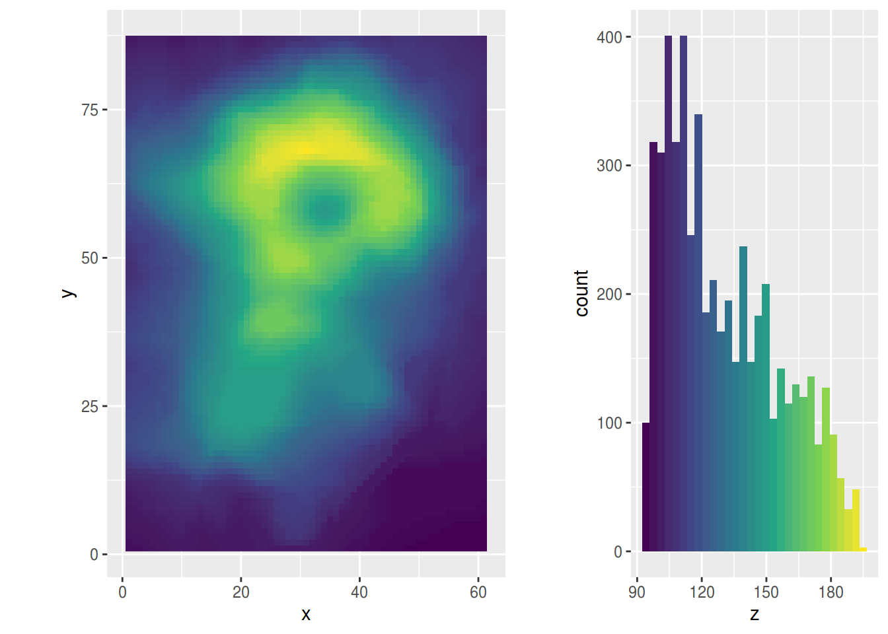
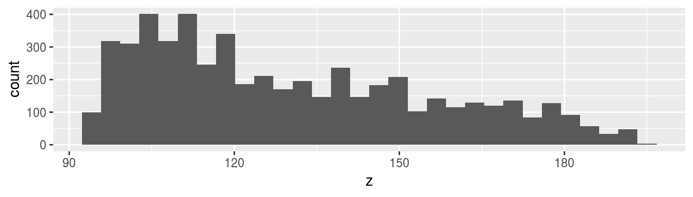
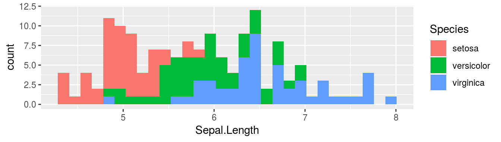
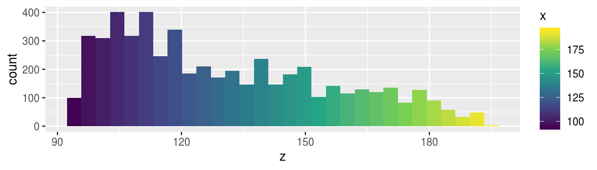
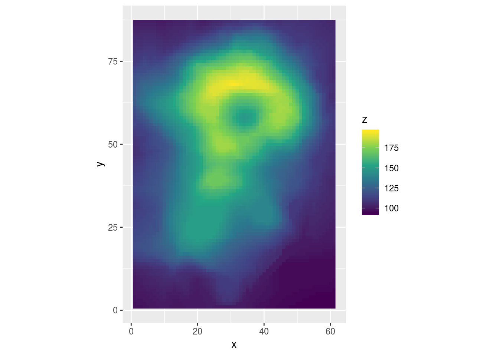
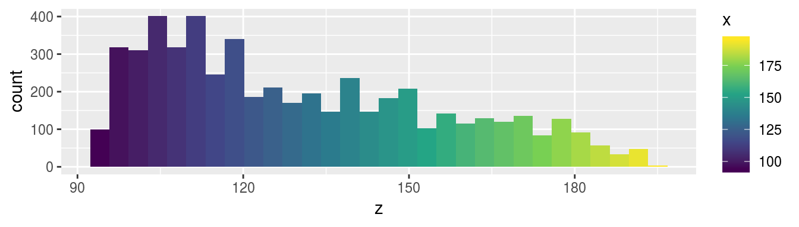
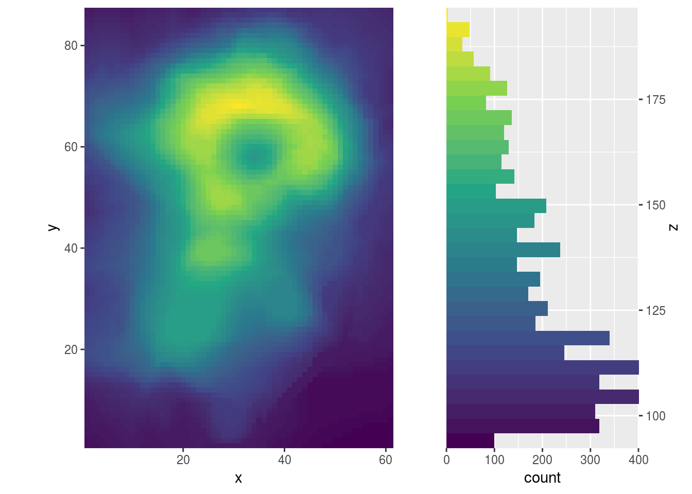

tl; dr
geom_histogram(aes(fill = stat(x))) すればいい。
ヒストグラムをヒートマップの凡例 + αにしたい
から、ヒストグラムのビンの色をx軸に応じて変えたいと思った。
具体的には下みたいなの。

使ったデータセットは volcano です (Maunga Whau Volcano)。
試行錯誤の歴史
データ整形
volcano は matrix なので、座標付きのデータフレームに整形する。
expand.grid に与える引数の順序と (y, x)、
y が降順で x が昇順なところがポイント。
volcano_df <- data.frame(
z = c(volcano),
expand.grid(
y = seq(nrow(volcano), 1),
x = seq(ncol(volcano))
)
)ヒストグラム
fill = x ではダメ
library(ggplot2)
gghist0 <- ggplot(volcano_df, aes(z)) +
geom_histogram(aes(fill = x)) +
scale_fill_viridis_c()
gghist0
geom_histogram において、
fill はグループごとの色分けに使うものだがら、
というのが雑な理解。
連続値を与えると無視されてしまう仕様っぽいけど、 ソースのどこらへんかまでは追えていない。
アヤメの種類のような離散値ならOK (下図)。
ggplot(iris, aes(Sepal.Length)) +
geom_histogram(aes(fill = Species))
fill = stat(x) ならOK
gghist <- ggplot(volcano_df, aes(z)) +
geom_histogram(aes(fill = stat(x))) +
scale_fill_viridis_c()
gghist
stat を使うと、
ヒストグラムを描写するための計算結果に応じた
審美的属性に用いる変数の選択ができる。
主に何が使えるかは、ヘルプの “Computed variables” の項に載っている。
geom_histogram の場合は
| Computed variables | 説明 |
|---|---|
| density | 密度 (頻度 / サンプルサイズ) |
| count | 計数 |
| scaled | density の最大値を1に変換したもの |
| ndensity | scaled に同じ。 |
実際には x など、ggplot_build した時に出てくるデータフレームの変数ならなんでもよさそう。
str(ggplot_build(gghist)$data[[1]])## 'data.frame': 30 obs. of 17 variables:
## $ fill : chr "#440154" "#45125C" "#461E65" "#46296E" ...
## $ y : num 100 318 310 401 318 401 246 340 186 211 ...
## $ count : num 100 318 310 401 318 401 246 340 186 211 ...
## $ x : num 94 97.5 101 104.5 108 ...
## $ xmin : num 92.3 95.8 99.3 102.7 106.2 ...
## $ xmax : num 95.8 99.3 102.7 106.2 109.7 ...
## $ density : num 0.00541 0.0172 0.01677 0.0217 0.0172 ...
## $ ncount : num 0.249 0.793 0.773 1 0.793 ...
## $ ndensity: num 0.249 0.793 0.773 1 0.793 ...
## $ PANEL : Factor w/ 1 level "1": 1 1 1 1 1 1 1 1 1 1 ...
## $ group : int -1 -1 -1 -1 -1 -1 -1 -1 -1 -1 ...
## $ ymin : num 0 0 0 0 0 0 0 0 0 0 ...
## $ ymax : num 100 318 310 401 318 401 246 340 186 211 ...
## $ colour : logi NA NA NA NA NA NA ...
## $ size : num 0.5 0.5 0.5 0.5 0.5 0.5 0.5 0.5 0.5 0.5 ...
## $ linetype: num 1 1 1 1 1 1 1 1 1 1 ...
## $ alpha : logi NA NA NA NA NA NA ...ソース
以下は冒頭に出した図を描写するためのソースコード。
library(pacman)
p_load_gh("thomasp85/patchwork")
p_load(ggplot2, tibble)volcano_df <- data.frame(
z = c(volcano),
expand.grid(
y = seq(nrow(volcano), 1),
x = seq(ncol(volcano))
)
)ggheat <- ggplot(volcano_df, aes(x, y, fill = z)) +
geom_raster() +
scale_fill_viridis_c() +
coord_fixed()
ggheat
gghist <- ggplot(volcano_df, aes(z)) +
geom_histogram(aes(fill = stat(x))) +
scale_fill_viridis_c()
gghist
wrap_plots(
ggheat + guides(fill = "none"),
gghist + guides(fill = "none"),
widths = c(1, .5)
)追記
軸の入れ替えや、場所替えをすると、よりそれっぽく、かっこよくなるかも？
周辺分布と紛らわしいかな？
wrap_plots(
ggheat + coord_fixed(expand = FALSE),
gghist +
scale_x_continuous(name = "z", position="top") +
coord_flip(expand = FALSE),
widths = c(1, .5)
) *
theme(legend.position = "none")